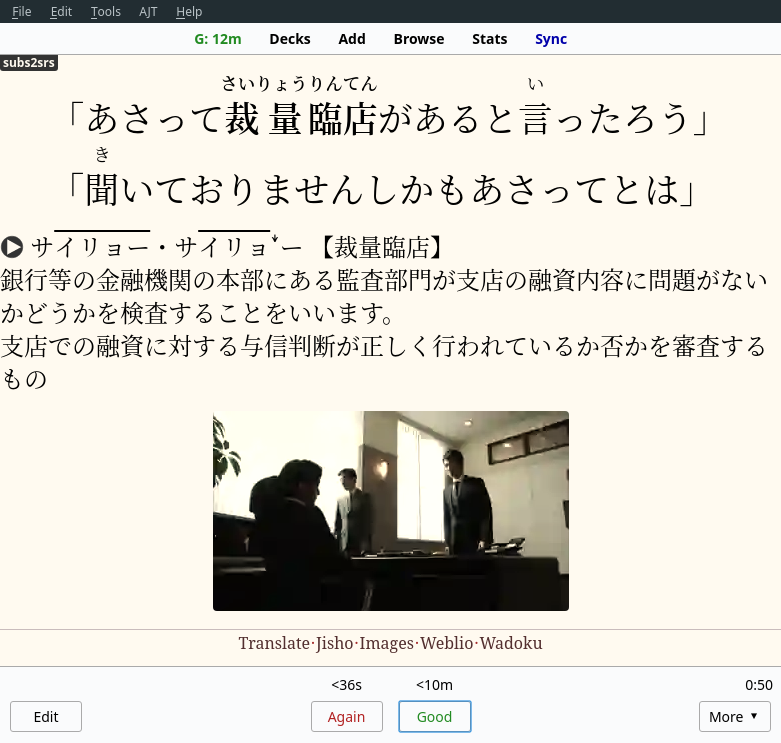

Sentence mining
Sentence mining is a process of extracting sentences that contain unknown words from the content you read, watch or listen to in your target language and adding them to Anki in a form of targeted sentence cards (TSCs). You put an example sentence in the question field and the definitions, pictures and pronunciations in the answer field.
Sentence mining and immersion are the two most important components of our method. Immersion provides you with new vocabulary to be mined, and mined sentences become fuel that advances your language learning.
Finding your own sentences is much more fun than learning from a premade deck, or, god forbid, a textbook. Because you're creating Anki cards out of vocabulary found in your immersion, you're always learning what is relevant to you. Once you reach this stage, it is way harder to quit Japanese, as the foundation is already in place.
Preparations
Before you really get into sentence mining, I recommend learning basic grammar and basic vocabulary. Once you do it, you are going to encounter way more 1T sentences in your immersion.
I started doing sentence mining after I learned 1000 words. At first I mixed sentence mining with learning sentences from a premade deck, but eventually I stopped using premade decks and switched to solely using my immersion to find new sentences.
- If you haven't finished Kanji Transition, do it now.
- If you wish to continue supplementing your study with a premade deck, go back to the Basic vocabulary.
Mining process
The process of mining sentences roughly consists of:
- Noticing an unknown word in your immersion.
- Looking it up in a dictionary.
- Selecting a 1T example sentence.
- Creating an Anki card with the sentence and the definition of the unknown word.
- Learning the card later.
We recommend picking the original sentence you found the word in. Using a sentence from a familiar source greatly aids memorization. Try to abstain from picking MT sentences. When reviewing a card, you shouldn't force yourself to recall more than one difficult thing at the same time. If for some reason the sentence is not comprehensible to you, substitute it with a different sentence from your sentence bank or from an online sentence bank. You can generate a large sentence bank by processing several TV shows with subs2srs. See Examples and pronunciations for available sources of sentences.
When you notice an unknown word, there are two ways you can go about mining it.
- Pause your immersion and make a card.
- Save the sentence you wish to mine somewhere else to deal with it later.
The first method is the most straightforward, but you need to pause and properly create a card every time. The advantage of the second method is that you are not pausing your immersion. Reading definitions and adding them to cards takes time, so some people may prefer to do it after they finish their immersion session.
- Generate a subs2srs deck before watching a TV show.
While immersing, mark the 1T sentences in the subs2srs deck by pressing
Ctrl+Kor by tagging them. Delete the cards you haven't marked. - Mpvacious allows you to send sentences directly to Anki by pressing
Ctrl+N. - When reading manga, screenshot the part of the page that contains a 1T sentence.
Later go back to the sentences you've saved and finish making the cards.
Words and sentences
Though in certain cases it's fine to make a word card, making a targeted sentence card instead brings more advantage. The meaning is only half of the picture. To understand a word, how it's used, and be able to use it correctly when speaking you need to know how the word connects with other words. Without an example you may misunderstand the word's meaning without realizing it. That's why making word cards is only recommended for concrete nouns. It is unlikely that you will misunderstand the meaning of a concrete noun, but you can cut a corner and save some time if you don't add an example to your card.
If a word has multiple meanings, the context on the targeted sentence card will tell you which meaning to focus on. Make separate cards for other meanings when it's necessary.
The role of example sentences is to provide context. Thus, the question field may contain more than one sentence if it helps clarify the usage of the target word. However, prefer examples that aren't too long. You can affect your review time if you often choose long context. It's okay to add parts of longer sentences to Anki. The clause must remain grammatically correct and retain a distinct meaning.
How to choose words
Being a hardcore ajatter, you probably want to eventually learn every word in your target language. Most of us pursue the same goal. Having that in mind, there are words that you may want to focus on and words that you may want to save for later. To decide which words are more important, pay attention to frequency lists. Choose frequency lists that match your immersion content. If none of your frequency lists have data for a word, it's probably better not to mine it.
In the beginning it will be impossible to mine every sentence you come across each day. You're going to have to decide when to stop adding new cards to Anki. Determine your daily sentence quota. Once you reach it, stop collecting new sentences and continue immersing freely. Continue paying attention to your immersion during this time.
Setting the daily quota will quickly become unnecessary as your comprehension of the language improves.
Card template
Refer to Discussing various card templates to get an idea of what to to put on your cards and how they should look. If you're using the card template introduced in the beginning of this guide, you don't have to set up everything yourself. If you wish to make your own card template, follow these rules.
- Put an example sentence and/or the target word on the front. It should be the only thing you have on the front.
- All hints should go on the back. Furigana, pronunciation, meaning is what you test yourself on. Having any of them on the front will spoil the target word.
- Focus on comprehension. The reason you're mining sentences is to understand Japanese. Speaking comes naturally through absorbing input.
Aim for high quality cards
TSCs that contain audio recordings, pictures or screenshots of the scenes they were taken from on the back are referred to as high quality sentence cards. Additional information on them helps you remember the target word better.
Your cards should imitate reading practice in real life situations. Naturally, don't put the picture or audio on the front. Out in the wild the hints won't be there to help you.
Try to make more high quality cards instead of cards that only contain text. There are many tools available to streamline adding audio and images to your cards. They are linked on the Resources page.

Grammar
In essence grammar is a set of special words or phrases
which don't bear any meanings themselves,
but are used to connect the words that surround them.
For example, the particle は, commonly referred to as the "topic particle",
connects the topic of a sentence with the rest of the sentence that describes it.
By itself it means nothing.
There's no need to make a distinction between regular words and grammar points when sentence mining.
TSCs can be used to learn both vocabulary and grammar the same way.
Grammar points can be looked up in a regular dictionary,
both bilingual like JMdict and monolingual like 大辞林.
Let's say you want to learn what によって means. Make a TSC with the grammar point as the target. On the back of the card, put a definition from a dictionary or from a grammar guide. I mined sentences from grammar guides in my beginner days. Though it is boring, I recommend it.
Translations
You can consult a translation while you're immersing to clarify certain nuances of the original sentence, but putting full translations on cards is discouraged. Translations are never accurate and don't make any sense if you compare them with the original word-for-word. Even in premade decks like Core and Tango the translations are far from perfect. Machine translations are the least preferable.
Daily amount of cards
It is advised to learn from 10 to 30 new cards a day depending on your preference and the amount of time you have for Anki. One way to determine your organic limit is to start with 10 cards a day and see how it goes. Increase the daily amount if you feel like you can handle more.
When it comes to how many cards you should make, there is no concrete number. There are people who make cards in advance on a weekend and slowly learn them on weekdays. Some people make cards and learn them right away. Some people learn the cards they have already made on the next day. What's important is that you always have sentences in your deck ready to be learned.
Tags: guide